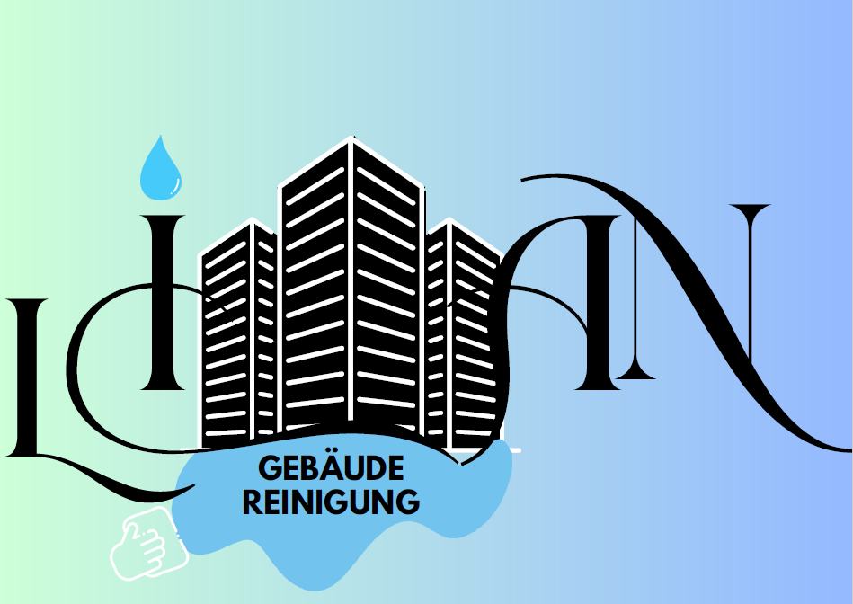
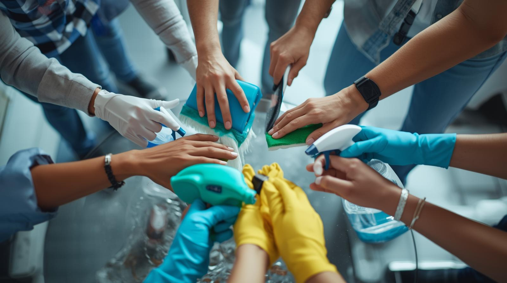

Wir sorgen für gründliche Sauberkeit in Büros, Gewerbeflächen und Privatkunden. Mit zuverlässigem Service und modernen Reinigungsmethoden halten wir Ihre Räume dauerhaft gepflegt und hygienisch.

Unser motiviertes Reinigungsteam arbeitet sorgfältig, zuverlässig und mit viel Erfahrung. Wir legen großen Wert auf Qualität, Vertrauen und eine saubere Arbeit damit Sie sich jederzeit auf unsere Dienstleistungen verlassen können.
Lian Gebäudereinigung bietet professionelle Reinigungsdienstleistungen
für Unternehmen, Gewerbe und Privatkunden in Köln und Umgebung.
Wir entwickeln individuelle Reinigungslösungen von regelmäßiger
Unterhaltsreinigung über Glas- und Baureinigung bis hin zu
Spezialreinigungen. Unser Ziel ist es, für unsere Kunden dauerhaft saubere, gepflegte
und einladende Räume zu schaffen.
Lian Gebäudereinigung
Stresemannstraße 3
51149 Köln